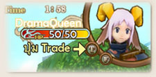

|  |
เมื่อต้องการแลกเปลี่ยน Item กับผู้อื่น ให้คลิกที่เป้าหมาย แล้วกดปุ่ม บน Target Menu บน Target Menu เพื่อทำการ request Trade หลังจากอีกฝ่ายกดยอมรับจะมีหน้าต่าง Trade ขึ้นมา |
 |
| ในเกม 12 หางออนไลน์ มีระบบเจ้าของ Item ที่เมื่อมีผู้สวมใส่แล้ว ผู้อื่นไม่สามารถนำไปใส่ต่อได้ จำเป็นต้องทำการตี หรือหลอมใหม่จึงจะนำมาใส่ได้ |